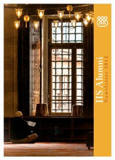

You will need the Flash plugin to view this publication
Download the Flash plugin for free here. Just refresh this page after installing Flash.
Also make sure that javascript is enabled in your browser.

Alternatively, you can download this publication in PDF-format - Click here.
Page 1
Page 2
Page 3
Page 4
Page 5
Page 6
Page 7
Page 8
Page 9
Page 10
Page 11
Page 12
Page 13
Page 14
Page 15
Page 16
Page 17
Page 18
Page 19
Page 20
Page 21
Page 22
Page 23
Page 24
IISAlumniNewsletter2012
MessagefroMtheCo-DireCtorThepastyearmarkedanothermilestoneofachievementsattheIIS.HisHighnessrecentlysummarisedouraccomplishmentsbygraciouslystatingthattheIIShasnowbecomeamatureinstitutionwithamultiplicityofprogrammaticactivities.ItisinfactnoexaggerationtostatethatourInstitutehasauniquecharacterasanacademicinstitutionaswellasanorganisationservingtheIsmailiJamatthroughavarietyofacademicandeducationalprogrammes.ManyofthesedevelopmentswillhavesignificantimplicationsforouralumniaswecontinuouslystrivetoincreasetheparticipationofouralumniintheIISactivities.Iamdelightedtoreportthatwehavenowpublishedmorethan100booksincluding12publicationsin2012.WepublishedadditionalvolumesinourIsmailiTextsandTranslationsSeriesandEpistlesoftheBrethrenofPuritySeriesaswellasanothervolumeofourEncyclopaediaIslamicawhichhasnowfounditsplaceamongstreferenceencyclopaediasonIslamworldwide.Ouracademictrackrecordisfirmlyestablished.Astudyofthereceptionofourpublicationscarriedoutin2012atteststoboththequantitativeandqualitativeimpactoftheseworksespeciallythoserelatedtoIsmailistudiesthroughouttheacademiccommunityandbeyond.Theindicatorsmeasuringthegrowingimpactofourpublicationsincludedbookreviewslibraryholdingsworldwidesalesfiguresuseofourbooksinuniversitycoursesandtheircitationsinotherscholarlypublications.WehavealsocontinuedtranslatingourpublicationsselectivelyintoArabicandPersianaswellasotherlanguagesusedbytheJamatwithatotalof80suchtranslationspublishedtodate.WhilemaintainingoureffortsinIsmailistudieswearenowincreasinglybroadeningourfocustowardsShiistudiesgenerallycoveringallShiicommunitiesonthebasisofaStrategyforShiiStudieselaboratedlastyear.AtthesametimeweareallocatingresourcestoaccessiblepublicationsforthebenefitoftheJamataswellasothernon-specialistaudiences.Forthispurposein2012wedevelopedaStrategyforAccessiblePublications.Meanwhileourin-housefacultyhasexpandedasmorescholarshavejoinedusonafull-timebasis.AmongstthesementionshouldbemadeofProfessorCarmelaBaffionitheforemostauthorityontheIkhwanal-SafawhohasjoinedtheIISasaSeniorResearchFellow.TheactivitiesoftheQuranicStudiesUnitrepresentanotherareaofaccomplishmentinouracademicactivities.ThroughitspublicationsandacademicMessagesworkshopsthisunithasnowreceivedacademicrecognitionasaseriouscentreofscholarshiponQuranicstudies.TheSTEPandGPISHprogrammestoohavebeenextremelysuccessfulduringthepastyear.Wecontinuetoattractoutstandingstudentstobothprogrammes.ThesuccessfulreviewoftheIISbytheQualityAssuranceAgencyforHigherEducationwasasignificantaccomplishmentin2012.TheIISwascommendedwithpositivejudgementsinallcategorieshighlightinganumberofbestpracticeswhichareconsideredexemplaryacrosstheprivatesectorinUKhighereducation.FurthermoretheIISwasacceptedbytheUKBorderAgencyasaTier5SponsorwhichwillenableustobringSTEPteachersandotheralumnitotheIISfortheirongoingdevelopment.In2012werestructuredtheprocessofdevelopingtheSecondaryCurriculummoduleswiththeDepartmentofAcademicResearchandPublicationstakingprimarycarriageforproducingtheacademicnarrativesandtheDepartmentofCurriculumStudiesDCSfocusingontransformingtheacademicnarrativesintostudenttextbooksandteachersguidesforeachmodule.WealsohaveanewHeadforDCSDrShirazThobaniwhoisanIISgraduatehimselfandhasbeenaffiliatedtothatdepartmentformanyyears.LastautumnwepublishedthesecondarymoduleonMuslimSocietiesandCivilisationswhichhasbeenwellreceivedinthefield.InthepastyearsomeorganisationalrestructuringtookplaceattheIIS.AllJamat-relatedactivitieswereconsolidatedintheDepartmentofCommunityRelationsnowheadedbyShirazKabani.ThisreorganisationisalreadyyieldingpositiveresultsespeciallyintermsoftheIISsrelationshipwiththeJamatandtheITREBs.WealsoappointedanewHeadofFinanceandAdministrationinthepersonofSalahMirzawhileSteveLewittsucceededDrAmandaHarrisastheHeadofHumanResources.FinallyAlnoorMerchantwhohadservedtheIISformanyyearsresignedfromhispostastheHeadofLibrary.ProfessorEricOrmsbyisthecurrentActingHeadofourLibrarywhilethesearchforapermanentHeaddependsondiscussionswithISMConthemanagementstructureofamergedIIS-ISMClibrary.During2012fivealumnigrantswereawardedforresearchandfieldworkaswellasattendanceatconferences.ThesegrantsenableouralumnitomaintaintheirinvolvementinscholarlyactivitiesandtocontributetothewidermissionoftheIIS.ItisourfirmconvictionthatIISalumnihaveakeyroletoplayinourprogrammaticactivitiesandweurgeyouourdearalumnitobecomeevenmoreactivelyinvolved.AttheIISwelookforwardtoworkingwithyouinthecomingyear.Dr.FarhadDaftary
MESSAGESPUBLICATIONSPRESENTATIONSPAPERSINTERNSHIPCULTURALRESEARCHGROUPSCONNECTIONSGRANTALUMNICHAPTERPROGRAMMessagesIn2012after244yearsthefamousEncyclopaediaBritannicahasstoppeditsprinteditionanddecidedtogoonlinerecentlylaunchingadigitalversionofitsweightyreferencework.AfteramuchshorterspanofsevenyearsoftheprintversionwelcometothefirstonlineeditionoftheAlumniNewsletter.Inmanyrespects2012mirrored2011.WhiletheOlympicsandParalympicsGamesinLondongeneratedhugeglobalinterestandcompetitivespirittheOlympictorchdidnotextinguishrealitiesconfrontingindividualsandcommunitiesworldwide.Fortoomanytheeconomicdespairandfinancialmiseryworsenedandsocialtensionsdeepened.AndinthiscontextourthoughtsarewithfellowalumniandfriendsindiverselocalitieswheretherehasbeenstrifeAfghanistanSyriaandTajikistantonameafew.OnceagainwewouldliketothankallmembersforparticipatingintheannualAlumniSurveyfor2012wehad98participationTheresultsofthesurveyareusedtocompileourAlumniStatusReportwhichissubmittedtotheInstitutesBoardeachyear.ItisourpleasuretosharehighlightsfromthereportwithyoubelowCurrentlythealumnibodycomprises383graduatesandatpresentmorethan50ofalumniresideintheircountriesoforigin.ThevastmajorityofIISgraduates94havecontributedtoIsmailicommunityandAKDNinstitutionseitherinaprofessionalorvoluntarycapacity.Twenty-eightalumnihavebeenappointedbyHisHighnesstoseniorpositionswithinIsmailicommunityinstitutionsgloballyincludingthreeasITREBChairpersonsIndiaFarEastandUK.Thirty-sevenalumniwereappointedduring2012tovariousleadershippositionswithintheIISAKDNandotherNGOsintheirsocieties.Asubstantialcontributionhasbeenmadetoacademia-thirty-ninealumnipresentedandorpublishedpapersandthreepublishedbooks.Twenty-eightalumnireceivedvarioustypesofawardsandgrantsincludingfellowshipsorscholarshipsduring2012.Twenty-sevenalumnihavebeeninvolvedwithTKNassignmentsduringtheyearinthefollowingcountriesAustraliaCanadaCongoMozambiqueNewZealandPakistanTajikistanUgandaUKandtheUSA.InresponsetothequestionrelatingtoSocialMediaanditsimpactonvariousaspectsofsocietiesandcommunitiestwenty-threealumnihavepresentedresearchinvariousformats.TheIISwantedtoidentifyalumniwhohaverecentexperienceofyouthdevelopmentprogrammesincludingyouthcampswithinandbeyondtheIsmailicommunity.Morethan110alumnirespondedthattheyhavebeeninvolvedwithprogrammaticactivitiesinthisfieldbothwithinandoutsidetheIsmailicommunityandAKDNagencies.AlumniRelationsUnitwouldliketotakethisopportunitytowelcomenewAlumniandwishthemtheverybestastheybegintheircareers.CongratulationsShellinaKarmaliAlumniRelationsCoordinator
ChapterGroupsNorthaMeriCaNChaptergroupAlumnifromacrossNorthAmericametinChicagofortheirannualmeetingon24-26AugustonthetopicofFaithandSocialChange.Thisyearsmeetingattractedarecordnumberofparticipantsbringingtogetherover50alumnifromCanadaandtheUnitedStates.SpeakersatthemeetingincludedtheHonourableMobinaJafferSenateofCanadaDr.AmynSajooSimonFraserUniversityDrHusseinRashidHofstraUniversityandleadersoftheIsmailicommunityfromCanadaandUSA.europeaNChaptergroupAlumnifromacrossEuropemetinIstanbulfortheirannualmeetingon7-10December2012.Themeetingbroughttogether19alumnitoexploreEthicsintheModernWorld.SpeakersatthemeetingincludedDrHadiAdanaliSeniorAdvisortothePrimeMinisterofTurkeyProfessorIhsanFazliogluIstanbulMedeniyetUniversityDrLaljubaMirzohasanovKhorogStateUniversityandDrZahideAyKonyaNecmettinErbakanUniversity.
AsiaEuropeNorthAmericaasiaNChaptergroupOversixtyalumnifromHongKongIndiaKenyaPakistanSingaporeSyriaTajikistanandTanzaniaconvenedinKualaLumpurMalaysiafortheannualmeetingoftheAsianChapterGroup.ThethemeforthemeetingwasTheSignificanceofQuranicTeachingsinthe21stCentury.SpeakersatthemeetingincludedDrArifJamalGPISH1997ProfessorBruceLawrenceDukeUniversityandProfessorAbdullahSaeedUniversityofMelbourne.
AlumniResearchGrantIn2009theIIScreatedanAlumniResearchGranttosupportalumniwhowishtopursuefurtherresearchpresentpapersatacademicconferencespublisharticlesorundertakefieldstudiesinareasofrelevancetotheIIS.Sinceitscreationgrantshavebeenawardedto10alumnisomeofwhomhaveprovidedasummaryoftheiractivitiesbelowSehreenNoorAliClassof2006TheAlumniResearchGrantenabledmetoparticipateinthe2010ConcordiaForuminGranadaSpain.Throughdiscourseandcollaborationtheannualconferenceaimstobuildanetworkofinnovativeleadersdevotedtopromotingsociallyprogressivechange.TheForumenablesglobalMuslimleaderstocreateopportunitiesandengendersolutionsforsocialchangeincommunitiesatthelocalregionalandtransnationallevels.Thethirtyparticipantswhoattendedspenttimebuildingbondsoftrustanddiscussingglobalchallengessuchasextremismandissuesrelatedtocommunityleadershipandtransatlanticcollaboration.TheUSSecretaryofStateHillaryClintonsSpecialRepresentativetoMuslimCommunitiesFarahPandithalsoattendedthemeetingandspoketothegroup.MostimportantlywemappedaplanofactionthatwouldallowthegrouptoworktogetheronjointprojectsinsuchawayastoleverageourindividualexperiencesandcreatechangeinthebroaderUmmah.DrMiriamAl-de-UnzagaClassof2000AsanindependentscholartheAlumniResearchGrantenabledmetopresentthefollowingpapersattwointernationalconferencesAndalusiandFatimidTextilesThreeCaseStudiesTheInternationalMedievalCongressheldattheUniversityofLeedsUKinJuly2010Inmedievalsocietiestextileswereexpressionsofstatus.Theywereusedinpoliticalculturalandreligiouscontextsandascurrency.FatimidandAndalusitextilesconstitutesignificantevidencevitaltounderstandingmedievalculture.Mypapercontextualisedthemotifsofsomeimportantpiecesinordertoproblematisehowmotifsmovedbetweencontextsandtoillustratehowtextilesactedastransculturalobjectsdespitereligiousandpoliticalrivalries.AndalusiTextilesTransculturalObjectsandCross-dressingintheIberianPeninsulaWorldCongressforMiddleEasternStudiesheldinBarcelonaSpaininJuly2010Todayapproximately600textilesproducedinal-AndalusremaininSpain.ThestudyofthebiographiesofeachpieceyieldsedifyinginformationthatallowsustobetterunderstandthattheoperatingIslamicatemodewasmorecomplexthantheimagepresentedbymodernhistoriography.InfactdataseemstoindicatethattheuseofthesevaluabletextilesbytheIberianNorthhadtodolesswithethicorreligiousrivalryandmorewithavisualarticulationofauthorityandstatus.DrAnilKhamisClassof1992In2009-10IvisitedPuntlandthehistoricallysemi-autonomousregionofSomalia.SomalialocatedontheHornofAfricaisborderedbyEthiopiaDijboutiandKenya.VirtuallythewholepopulationisMuslimwithaSufibackground.GarowethecapitalissituatedinahotaridvalleyinthemiddleofPuntlandBosasoandGaalkacyoaretheothertwomaintowns.GaroweissituatedinahotaridvalleyanditsoutskirtsarestrewnwithcamelsandthetentsofrefugeesordisplacedpersonswhichareemblazonedwithUNHRCUnitedNationsHumanRightsCouncillogos.Afteratensecivilconflictin2007SomaliapresentlyhasaTransitionalFederalGovernmentTFGthatisacoalitionofdifferentparties.IslamwasspreadfromtheseventhtotheninthcenturiesalongtheEastAfricancoastfromSomaliatoMozambiquebymaritimetraders.ItwasinthefourteenthcenturythatIbnBattutavisitedSomaliaandmentionedPuntlandorBuntland.Puntreferstothelandofspicesitwasso-calledafterthefragrantplantsthatgrowintheregion.ThepurposeofmyengagementwithPuntlandisanActionResearchstudyinvestigatingthepotentialtoprovidequalityeducationintheregion.Historicallyeducationisprovidedviadugsithatareavailableuniversally.DugsieducationcomparabletomadrasasaimtomakechildrenfromtheageofthreeyearsonwardsintogoodMuslims.Afterfajrprayerschildrenattenddugsifrom5amforacoupleofhours.
Beingasemi-aridregionasignificantproportionofthepopulationisnomadicpastoralistsandherders.Intheseharshandopenenvironmentseducationisaffordedandavailableevenifonlyunderthemeagreshadeofathorntree.Althoughformalgovernmentandprivateschoolsexisttheyattractonlysome20ofthepopulationwhoalsoattenddugsiearlyinthemorning.Formalschoolsaresituatedmostlyinthetowns.DuringmyinitialvisitinlateSeptember2010IworkedwithlocalreligiousscholarsSheikhswhooverseedugsieducationMinistryofEducationofficialsandteachereducatorsfrominstitutionsofhighereducationaswellasstafffromtheNorwegianRefugeeCouncilandUNICEFUnitedNationsInternationalChildrensFund.AfteridentifyingareasthatneededfurtherinvestigationmyvisitinearlyNovember2010focusedonlearningindugsiandotherschoolsandempiricalanalysisofthecurriculaonoffer.Thesearethefirstincipientstepsinwhatwillbealongjourneyofeducationaldiscovery.AlthoughthereisalongwaytogotoprovidequalityeducationtothechildrenofPuntlandIrefertotheChinesesayingajourneyoffivethousandmilesbeginswithasinglestep.TheAlumniResearchGrantalongwithotherfundingfrominternationalagenciesissupportingmystudieswhileIambasedinKenya.DrZuhalAvzalshoevaClassof2005TheAlumniResearchGrantallowedmetoattendtheInternationalSummerSchoolonLawandCultureatOsnabruckUniversityinGermany.ThefocusofmyresearchisintheareaofwomensstudiesinparticularIaminvestigatingtheriseofviolenceagainstwomenandexploringhowandifjusticeisdealt.ParticipatingintheSummerSchoolprovidedmewithanexcellentplatformtohavediscussionswithotherstonetworkandtopresentmyworkinanenvironmentinwhichIcouldreceivevaluablefeedback.BylookingintothesocietalandculturalfactorsthatshapeandinfluenceattitudestowardsviolenceagainstwomenIbelievethatthetrendsofviolenceandthebestwaysofhandlingsuchcasescanbedetermined.WhileadheringtotheideathatadequatelawsareimportantintheeliminationofviolenceagainstwomenIalsobelievethatlawsdonotexistinisolationandinordertoensuretheirimplementationculturalnormsoughttobetakenintoaccount.DrKarimGillaniClassof2003TheAlumniResearchGrantcontributedtomyattendanceatthe54thAnnualConferenceoftheSocietyforEthnomusicologyinMexicoCityentitledBorderlessEthnomusicologies.Scholarsstudentsmusiciansandresearcherstravelfromaroundtheglobetoparticipateinandsharetheirexpertiseatthisconference.IpresentedanacademicpaperonNewSufiTrendsinthePopularMusicofIndiaandPakistan.NewtrendsinSufimusichaverecentlygainedwidespreadpopularityonthecontemporaryIndo-Pakistanmusicscene.WhilemusichasbeenpresentamidsttheSufiordersofSouthAsianMuslimsforcenturiesthetermSufihasproliferatedinpopularcultureonlyinthepastfewyears.ApopularIndianrealityTVshowSa-Re-Ga-Ma-PafashionsPakistansMussaratAbbasasaSufiiconwhileAmulStarVoiceofIndialabelsIndiasMohammedToshismusicasSufisoul.InthislightIbelieveitiscrucialtoascertainwhatqualifiestheaboveperformersasSufisingers.DoesthetermSufirelatetocertainsongslyricsorstylesofmusicAccordingtotheco-managingdirectorofTipsMusicRajivSoganiSufiisthehottest-sellingthinginthemarket.ThereforerecentlymanymusiccompanieshavejumpedontothebandwagonofcreatingnewtrendsbyincorporatingSufisoundsintotraditionallypopularbrandsofmusichenceSufiRockSufiKhatakSufiKhayalandSufiEuphoria.MystudyaimstocriticallyanalysehowthetermSufihasrecentlybeenusedbymusicindustries.ArguablytheuseofsuchterminologyhasminimalrelationshiptotraditionalSufism.ThepaperalsoaimstoinvestigatethemotivationbehindtheinclusionofPakistanisingersintheBollywoodindustryandthekeyreligiousandAlumniResearchGrant
socio-politicalelementsthathaveledtotherapidandimmenseappreciationofnewSufitrendsinthepopularmusicindustryofIndiaandPakistan.SharafOshurbekovClassof2005TheIISAlumniResearchGrantpartiallyassistedmeinmyprojectonIsmailiMuslimplacesofworshipinBadakhshanTajikistan.ThefieldworkexperiencewasagreatopportunityformetovisitdifferentregionsofBadakhshanandtolearnmoreaboutlocalIsmailireligioustraditionsfromvariousperspectives.IvisitedthedistrictsofVakhanIshkashimShugnanandRushanandcollecteddataaboutlocalIsmailiplacesofworshipandotherreligioustraditions.AsisprobablythecasewithanyanthropologicalfieldworkmyresearchinBadakhshanforcedmetonotonlyre-examinesomeofmyownperceptionsoflocalIsmailitraditionsbutalsototestandre-evaluatesomeoftheexistingtheoreticalandconceptualframeworksthatarecommonlyusedtoanalyselocalreligiousbeliefs.IncollectingstoriesfromtheoldergenerationIwasabletomakeconnectionsbetweenpresentlocalreligioustraditionsandpastonesandtoidentifydiscrepanciesbetweenthemintalkingtotheyoungergenerationIwasabletoinferwhatthefuturedirectionsofthesetraditionsmightbe.TheoraldatathatIcollectedandthelocalmanuscriptsthatIreadshowedmethedynamismofthelocalreligiouslandscape.ClearlythedynamismandcomplexitythatIencounteredduringthefieldworkexposedsomeoftheobjectifyingandessentialistthoughtunderlyingpreviousscholarsestimationsofthistradition.ForexampletheliteratureontheIsmailiplacesofworshipinBadakhshanhasmainlyrepresentedtheassociatedpracticesasremnantsofpre-Islamicbeliefs.Althoughthisisanimportantobservationassomeelementsofthisbeliefmightcomefromthepre-Islamicperiodinmostcasesitfailstotakelocalpeoplesperspectiveintoaccount.Asaresultitessentialisesthistraditionandignoresthemultivocalityofculturalandreligiousperspectives.Therichstoriesassociatedwithplacesofworshipinthisregionhowevershowthediversityofthistraditionandrevealaspectsoflocalreligiousattitudesandworldviews.Thustravellingandstayinginvariouspartsofthisregionenhancedmyappreciationofthedifferentperspectivesthatthepeopleoftheregionhaveabouttheirreligioustradition.CurrentlyIamanalysingthedataandworkingonanarticlebasedonmyfindingswhichIhopetopublishsoon.AlumniResearchGrant
TheAlumniRelationsUnitendeavourstoorganiseinternshipsforgraduatingstudentswiththeaimoffacilitatingtheirtransitionfromstudentlifetoprofessionalcareerswithintheAgaKhanDevelopmentNetworkandinstitutionsoftheIsmailicommunity.Theinternshipprogrammeseekstoenableourgraduatestoobtainpracticalexperienceinfieldsthatareofinteresttothemandrelevanttotheireducation.Afewalumnifrom2011-12sharetheirexperiencesbelowRozinaKanchwalaMyplacementwiththePrinceSadruddinAgaKhanFundfortheEnvironmentPSAKFEinNairobiKenyaallowedmetogetinvolvedinthreedifferentprojectscoordinatingthetreeplantingcampaignoftheAKDNandtheLionsClubassessingtheenergyefficiencyofthecookstovesthatweredistributedtotreefarmersintheruralareasofCoastProvinceandreportingonthecorporatesocialresponsibilityofthevariousAKDNagencies.Itallowedmetheopportunitytoworkwithabroadrangeofcivilsocietyactorsincludinglocalschoolsnon-governmentalorganisationsgovernmentministriesandresearchinstitutes.ThisplacementwasmeaningfulbecauseIwasabletoseefirst-handhowprojectsaccountfortheintersectionbetweentheenvironmentanddevelopment.IhadlearntaboutthisinmydegreetheMasterofScienceinEnvironmentandSustainableDevelopmentwhichIhadjustcompletedanditcementedtheseconcepts.ThisplacementlastedsixmonthsfromJanuarytoJuly2012.NibrasAldibbiatLikemypost-graduateacademicjourneymyprofessionalonealsostartedattheIIS.IhadtheopportunitytospendeightmonthsintheDepartmentofCurriculumStudiesworkingasanevaluationintern.Myremitwastoconsolidatethefield-testingdataonthemoduleEthicalPathwaystoHumanDevelopmentconductqualitativeandquantitativeanalysesofthedataandcompilecountryevaluationreports.Asmuchasthismissionwasexcitingitwasalsochallenging.AlthoughIhadworkedcloselywithdatainmyacademicstudiesthiswasonadifferentscale.MassiveamountofdatahadbeencollectedfromfourcountriesnamelytheUSAtheUKPakistanandIndia.Hundredsofpagesneededtobesummarisedandanalysed.Eachdetailmatteredyetthesummarieswereexpectedtobeshortandtothepoint.IwasfortunatetobementoredbyaninsightfulmanagerwhoisalsoaGPISHalumnusNazminHalani.Nazminsexperiencewasinvaluableinguidingmethroughthevastamountofwork.HavingbeensupportedinthiswayIwasabletodelvedeeperintothedatacollected.AtalaterstageIbecamemoreinvolvedinotheractivitiesofthedepartmentincludingconsolidatingthereviewdataofthematerialsthatthedepartmentwasproducingandcontactingresearchersinthefieldforfurtherinformation.OnfinishingmyinternshipIhavecontinuedtoworkwiththedepartmentasanEvaluationOfficer.Thescopeofmyresponsibilitieshasexpandedandsohasmyappreciationofmyassignments.ZahraSheriffMyinternshipunderthesupervisionofDrAl-KarimDatooattheAgaKhanUniversitysInstituteforEducationalDevelopmentAKU-IEDinKarachiprovidedmewiththeopportunitytogainrelevantworkexperienceinthefieldofresearchandeducation.AttheAKU-IEDIworkedonthefinalstagesofDrDatoosresearchprojectExploringCurriculaonPluralism.Thissix-monthinternshipservedtoguidemethroughthecriticaltransitionperiodfromstudenttoworkingprofessionalwhichcansometimesbedifficult.ReturninghometoKarachiPakistanafterhavinglivedandstudiedinLondonforthreeyearsinitiallyseemeddauntingeventhoughItookcomfortinthefactthatIwasreturningtofamily.HoweverknowingthatIwasbeingfacilitatedtofindworkandeventuallystartingtheinternshipwithinamonthofreturninghomeprovidedmewithagreatsenseofsupportencouragementandrelief.IthasnowbeenafewmonthssinceIhavecompletedtheAlumniInternshipuponreflectionIcansincerelysaythatthisopportunityservedasatrampolineinopeningmultipledoorstoendeavoursthatIcanchoosetopursueinthefutureinmycareerpath.LailaNazTajTheinternshipwiththeFOCUSEuropeFoundationprovidedmewithanexcellentopportunitytolearnabouttheglobalcommunitiesatriskandalsodevelopadministrativetechnicalandprogrammaticskillsinhumanitarianassistanceandemergencyresponse.ItalsoprovidedmewiththeopportunitytodofieldresearchinAfghanistanwhereIstudiedtheimpactofthe2011droughtinsixprovincesofAfghanistan.MybackgroundinIslamicStudiesequippedmewiththerightskillstodohumanitarianworkinaMuslimcontext.ThisinturnledtoagrantfromUSAIDUSAgencyforInternationalDevelopmentandalsothepresentationofapolicypaperattheInternationalDisasterandRiskConference-GlobalRiskForuminDAVOSSwitzerlandinAugust2012.IalsohadtheopportunitytowriteanotherpaperbasedonastudyoffoodsecurityinAfghan-BadakhshanwhichwillbepublishedthisyearinthejournalEmergencyNutritionNetworkissueno.44.InadditionIhadtheopportunitytoexchangeviewsonglobalriskswithFOCUSCanadaandTajikistanaswell.AsamemberoftheFOCUSEuropenationalcommitteeIalsoassistedinorganisingprogrammesfortheIsmailiCommunityintheUKtoeducatethemaboutthenaturaldisastersinPakistanandtheassistanceprovidedbytheAKDNinstitutions.IplantocontinuemyworkwithFOCUSHumanitarianAssistancePakistanandtousetheexpertisethatIhavegainedfromTheInstituteofIsmailiStudiesLondonSchoolofEconomicsFOCUSEuropeandFOCUSAfghanistan.InternshipProgramme
soCialiNterCoNNeCtioNsaNDiNstitutioNalrelatioNshipsshapiNgtheselfAmalSachedinaClassof2000PakistanKuwaittheUnitedStatesGreatBritainTunisiaYemenandEgyptIwasborninthefirstraisedandeducatedintherest.Mypersonalhistorycouldbesummedupinaninchoatesetofexperiencesfeelingsandrelationships.HowevereachpersonaleventwasshapedbythecircumstancesinwhichIlived.IwasborninKarachiPakistanbutlivedinKuwaitwheremyfatherwasanaircraftengineerfromearlychildhood.InretrospectlifeinKuwaitwasoneofcomfortablestability.Mydaysrevolvedaroundschoolbooksandvisitstofamilyfriends.ItwasaplacidexistencethenbutattheageofsixteenthiswasshatteredbyIraqsinvasionofKuwaitandthesubsequentdevastationbroughtaboutbythefirstGulfWar.Theseeventsprovedtobetheturningpointthatplacedmeonmycurrentintellectualandspiritualpath.Myfamilylostalltheirpropertyandsavingsatthetimeandthetraumaofthelossofsecurityleftalastingmarkonme.MyneedtounderstandhowsucheventscouldcomeaboutledmetothestudyofIslamandMiddleEasthistoriespeoplesandsocieties.Thisregionhassincebeenthefocusofmystudies.MystudiesthusfarhavebeeninformedbytherealisationthatdespiteattemptsintraditionalarthistoryIslamicstudiesandculturalheritagetode-politiciseandcreatetacityetsacrosanctbordersaroundtheirfieldsculturalhistoryisinextricablyintertwinedwithpoliticsandcanactivelyshapeidentitynationalismandmoderngovernance.Thisobservationleadstoanumberofquestionsregardingourrelationshiptoaphysicallyinaccessiblepastsuchashowtheconceptsoftraditionhistoryandheritagemediatepeoplesidentitiesshapetheirreligioussensibilitiesandpracticesandratifytheirexperiences.MydissertationfocusesonhowtheformationofthenationalheritagesectorintheSultanateofOmanhasreconfiguredthenatureofmemoryreligionandcommunity.ItisastudyofhowhistoricpreservationpublicmuseumsandmaterialheritagerecalibratethesenseoftraditionandthepopularhistoricalimaginationsothattheyaccordwiththedesirablepoliticalandethicalfuturesinOman.ItseekstounderstandthedifferentwaysinwhichtheSultanateofOmanspastinhabitsthepresentsustaininganactiveeffectontheconfigurationofreligionspecificallywithregardtoitspredominantsectIbadismpoliticsandcommunityinthenationstate.MyexaminationoftherealmofheritageinOmanisbasednotsimplyonitscapacitytoinstillideologiesbutitspotentialtoshapetheperceptualhabitsandsensibilitiesofitsaudience.IseeOmanasalensthroughwhichtoviewlargerproblemsofthepastbothintermsofitsentanglementswithhistoricalmemoryanditsengagementswithlargerinter-disciplinarydebatesontherelationshipamongmodernityreligiouspracticesandstatepracticesinmodernMuslimsocieties.InaddressingthesefundamentalquestionsmydoctoralresearchseekstoexploretheroleofglobaldiscoursesofculturalheritageandconservationintheproductionofnationalculturesparticularlyintheArab-PersianGulfareaandtheemergentnationalheritageindustrythatshapesthediversecommunitiesoftheregion.TothisendIconductedethnographicresearchinMuscatandNizwainOmanoverthecourseofsixteenmonthsfromDecember2009toJune2011.Iamcurrentlyapost-doctoralfellowattheAmericanMuseumofNaturalHistoryinNewYork.TherewhilewritingmydoctoraldissertationIwillalsobeworkingwiththeanthropologydepartmentAsiancollectionstogeneratenarrativesandthemesforanewIslamicandMiddleEastsectionaspartofthepre-planningphaseforarenovatedAsiaHall.AfundamentalpartofmyworkwillbetoengagewiththelocalleadersandrepresentativesofMuslimcommunitiesinthelargerNewYorkareaandconveytheiropinionsandconcernsabouthowIslamshouldberepresentedinthenewpermanentHallofAsianPeoples.CulturalConnections
MughalIndIaartCultureandeMpIreBritishLibraryExhibition9November2012-2April2013QudsiaNaunehalShahClassof2006WhenIwenttoseetheMughalexhibitionattheBritishLibrarytitledMughalIndiaArtCultureandEmpireIthoughtIknewwhattoexpectsomebeautifulminiaturepaintingsthehistoryoftheriseandfalloftheempiretheusualmentionoftheEastIndiaCompanyetc.Iwouldhavebeenquitehappywiththeseofferingsandwaspreparedforanenjoyablestrollthroughtheexhibitionbutwasnotexpectinganysurprises.HowevertomydelightthereweremanypleasantdiscoveriestobemadeTheexhibitionstartsinthemiddleofthePaccarGallerywithaninterestingwalkthroughtheMughalperiodstartingwithBaburwhofoundedtheempireandendingwithBahadurShahIIthelastMughalemperor.ButthereisalsoaspecialfocusonsixrenownedMughalemperorsBaburHumayunAkbarJahangirShahJahanandAurangzebtheirstoriesarenarratedthroughshortbiographicaldetailsandminiaturepaintings.TherestoftheexhibitsarelaidoutaroundthiscentralspaceandaredividedintosevendifferentsectionsentitledLifeinMughalIndiaInternationalRelationsCourtlifeMughalLibraryLiteratureScienceandMedicineandDeclineoftheEmpire.Thestoriesofthewomenassociatedwiththeemperorskeptsurfacingthroughouttheexhibitionthiswasrefreshingasthedetailsoftheirlivesusuallyremainuntoldandintheshadows.ItwasfascinatingtonotethatHumayunswifeHamidaBanuBegumhadagreatinterestinbooksandmaintainedalibraryofherownShahJahanseldestdaughterPrincessJahanAracommissionedthebuildingoftheJamiaMasjidinAgraJahangirswifeNurJahanwaspoliticallyactiveespeciallyduringthelateryearsofJahangirsrulewhenundertheinfluenceofdrugsandalcoholherelinquishedhispoliticaldutiestohershealsobuiltaspectaculartombforherfatherAurangzebsdaughterPrincessZebunnisawasapoetessandherpoemsarealsoondisplayattheexhibition.Theseexhibitsremindusofthecentralityofthewomenofthepalaceinpoliticsandsocietyandoftheireconomicempowerment.TherearemanyotherinterestingexhibitsthereisaletterthatGhalibhadwrittentohisfriendMaulviNumanAhmedwhichisondisplayandforanyonewhocanspeakUrduitisarealtreattoseeandreadthis.TherearealsonumerouspiecesthroughouttheexhibitionhighlightingPrinceDaraShikohsShahJahanssontolerancehisSufitendenciesandloveofknowledge.OneofthesewashistranslationfromSanskrittoArabicoftheHindutextoftheUpanishads.AnyonewithevenalaymansknowledgeofMughalhistoryhasheardoftheircontributiontotheartsandarchitecture.Howevertheirloveofbookshashardlyeverbeenmentioned.SoitwasinterestingtolearnthroughtheexhibitsthattheMughalsatthepeakoftheirempirehadalibrarywhichboasted24000volumeswhichhadanestimatedvalueof6463731rupeesatthattime.Thisamountisquiteconsiderableespeciallywhenplacedinthecomparativecontextofthevalueoftheirweaponry.Unfortunatelythelibrarywasburntandlootedin1739byNadirShahanIranianwarlord.AnotherdiscoverywasthecommentaryundertakenatthetimeofthegreatMughalemperorAkbarofAvicennasCanonofMedicinebyAliGilaniwhowastheemperorspersonalphysician.ThistexttitledSharhalQanunfil-tibbisalsoondisplay.FormethemosthauntingexhibitwasapictureofBahadurShahIItakenattheRedFortwhileawaitingtrialforhisroleintheuprisingof1857.HavingbeenledthroughexhibitsattestingtothegloryoftheMughalempireitsrichesgrandeurthepompandthepridetothencomeacrossthisstarkblackandwhitephotographofashrunkenBahadurShahIIwithhisvacantstareastonishesyouandmakesyouwanttoreturntoeachexhibittotakeacloserlooktoseeifitispossibletounderstandhowtheempirereachedthisstage.ReflectionsReviews
thereluCtantFundaMentalIstbyMohsinHamidLondonPenguin2008MariaBudhwaniClassof2010ThequestionofhowonenegotiatesonesidentityandofhowidealismandrealityclashwiththisidentityarethecentralquestionsexaminedinMohsinHamidsnovelTheReluctantFundamentalist.WhenwefirstmeetChangezthebooksprotagonisthesachattyuniversityprofessorfullofanti-AmericanrhetoricwhoinvitesanAmericanjournalistBobbytocomeandsitwithhim.ChangezbeginstotellBobbyhisstoryrevealingthatdespitehavingstudiedintheUSheisnowknowntocultivateafollowingofstudentswhoreadilysharehisanti-Americansentiments.WelearnthatasayoungmanfromLahorePakistanfreshoutofPrincetonUniversityChangezwasexcitedaboutthepossibilitiesthathisnewlifeasaninvestmentanalystforoneofthemostprestigiousfinancialfirmsinNewYorkCityheldforhim.HetellsofhowhecamefromafamilythatwasoncewealthybutwasnowstrugglingtomaintaintheirimageandhowhebecamefascinatedbytheeasylifeofAmericans.HenostalgicallydescribesatripthroughGreecejustbeforestartinghislucrativejobwherehemetthealluringandartisticEricawhomesmerisedhim.Itwashiscontinuedfriendshipwithherthatbroughtoutthegentlesideofhimwhichwassoatoddswiththeruthlessandmoney-hungrycareertowhichhiseducationandskillshadbroughthim.AshebeginshisfirstjobheistakenunderthewingofhisbosswhotellshimheunderstandshowitfeelstobedifferentthantherestasChangezistheonlynon-AmericanandPakistaniworkingforthecompany.AndthenthedaythatisalwayslookeduponasthedaythatchangedAmericahappensSeptember11th.WhileonabusinesstriptotheFarEastChangezseeswhatishappeningtohisnewhomeonthetelevision.Hisreactiontothetragiceventsleadshimtoreevaluatehimselfhisnewhomeandwhathestandsfor.HamidspresentationofChangezscompletebreakdownwithrespecttohisbeliefsgoalsandidentityishandledinsuchamannerthatanyonecanrelatetoit.Theauthorreachesouttothereaderandevokesthemomentswhentheyquestionedsomethingtheythoughtwouldneverchangetheirbeliefsandideals.Thisremarkablebookhasnowbeenturnedintoafilmbytheaward-winningdirectorMiraNair.ItstarsthecharmingRizAhmedasChangezandKateHudsonasErica.ItenjoyeditsdebutattheVeniceFilmFestivalwhereitwasoneofthemosthighlyanticipatedfilms.Thisfilmisamust-seeasitforcesustoreconsiderourunderstandingofwhoisafundamentalistandthinkaboutabouthoweventhesmallestreactionstothebiggesteventscancauseustoquestionouridentity.threeCupsoFteaoneMansMIssIontoproMotepeaCeonesChoolatatIMebyGregMortensonandDavidOliverRelinNewYorkVikingVikingPenguin2006MumtazViraniClassof1983ThreeCupsofTeaistheinspiringtruestoryofGregMortensonanAmericanmountaineerwhosedestinyledhimtobecometheagentofchangeforthousandsofvillagersinNorthernPakistanandeventuallyAfghanistan.ThezealandcommitmentwithwhichMortensonanordinarypersonlikeanyofusembarkedonthetaskofbuildingaschoolwithfewfinancialresourcesorcompetenciesathisdisposalisinspiring.Hemadeseveralcompromisessleepinginhiscarformonthsonendbecausehewantedtosaveeverypennytofulfilhispromiseandsacrificinghissociallifeincludinghisrelationshipwithhisgirlfriendwhocouldnotcopewithhislifestyle.AllthisbecausehewasdeterminedtokeepthepromisehehadmadetotheheadofKorphealittleknownvillageinBaltistantobuildaschoolthereasanexpressionofhisgratitudeforsavinghislife.Itisamazingtoreadaboutthismanswisdominselectingservicesforthebuildingofschoolsinthevariousvillages.Afterallhewasnotconnectedtoanywell-establishedinstitutionornon-governmentalorganisationhewasanursebyprofessionwithnoexperienceinruraldevelopment.WiththebenevolentportFolIosoFthepoorhowtheworldspoorlIveon2adaybyStuartRutherfordDarylCollinsJonathanMorduchandOrlandaRuthvenPrincetonandOxfordPrincetonUniversityPress2009FaridaJumaClassof1986TheauthorsofthispublicationhavebuiltonanideaoriginallypresentedbyDavidHulmewhichwastocompilefinancialdiariesofpoorhouseholdsinordertosystematicallycapturethecomplexrangeofwaysinwhichtheymanagedtheirmoney.Rutherfordandasmallteamcompiledthefirstdiariesfrom42Bangladeshihouseholdsbetween1999and2000Ruthvendidthesamewith48householdsinIndiain2000andin2004Collinscollecteddiariesfromsome94familiesinSouthAfrica.Inallcasesthetechniqueusedwasthesame.AresearcherwouldvisitapoorhouseholdrepeatedlysayeveryfortnightforayearandwouldgatherReflectionsReviews
ReflectionsReviewsdetailedinformationaboutwhatitsmembershadearnedspentborrowedandsavedsincethelastvisit.Throughthedatacollectionandtheassociatedconversationsanintimateportraitofthehouseholdsfinanciallifewaspiecedtogether.Thebookemphasisesthatbeingpoorinapoorcountrymeanshavinganincomethatisnotjustlowbutvariableandunpredictable.Itshowsthatifyoumake1today4tomorrowandnothingthedayafterbutneedtoputfoodonthetableeverydayyouwillengageincomplexpatternsofborrowingandsavingtorectifythediscrepancybetweenyourincomeandoutgoings.Thusoutofnecessitypoorpeopledeploymorecomplexfinancialstrategiesthanrichpeople.ThebookprovidesstoriesoffamilieswhoareconstantlyjugglingsmallloanstoandfromfriendsandfamilysavingwithlocalmoneyguardsparticipatinginsavingsandinsuranceclubssuchasburialclubsinSouthAfricabuyinggroceriesfromthelocalshopkeeperoncreditandotherwiseemployinganextraordinarydiversityoffinancialdevicesinordertogetby.PortfoliosofthePooralsoshowshowtheseinformalfinancialrelationshipsbecomeembeddedinsocialrelationshipswhichprovestobebothablessingandacurse.TheblessingisthatitallowsforflexibilityinthemanagementofmoneythecurseisthatitcarriesalevelofuncertaintyforexamplewillyourbrotherpayyoubackIntheviewofthebooksauthorsinthefinanciallivesofthepoorsemiformalmicrofinancestandsoutforitsreliabilitytraditionalmicrocreditisdisbursedonceayearbutfamilymembersdonotfallsickwithintheconfinesofsuchaneatschedule.Thisiswhereotherinformalformsoffinancefitin.Thebookhastwomainshortcomings.Thefirstisthatitlacksafull-blowndiscussionofgenderissuesatplayinthehouseholdsmanagementofmoney.Theauthorsexplicitlystatethattheirunitofanalysisisthehouseholdnottheindividualyetsurelyinthecourseoftheirresearchtheymusthavegatheredinformationonhowbothmenandwomenwithinahouseholdcooperateandviewitheachotherinmanagingmoney.Thesecondoversightmoreunderstandablesinceitliesfurtherfromthecorecontributionofthebookisthatitdoesnotexaminethebusinessimperativesofmicrofinance.Onthewholethoughthebookisbalancedandworthreading.assistanceofasingledonorhewasabletogeneratethefundsrequiredtofulfilhiscommitment.AlthoughnotconsciouslyawareofitMortensoneffectivelyappliedprinciplesofparticipatorymanagementanddecisionmakingbyconsensusandhebelievedinthewisdomofruralpopulations.Thestoryexcellentlyportraystheessentialcomponentofsuccess.Theapplicationofpassioncommitmentpatienceanddeterminationcoupledwithcommonsensetoanyendeavourgetsresults.Withtheseessentialingredientsinplaceeverythingelsecanbelearnt.MortensonexperiencedmanyofthedangersandchallengesanAmericanmightfaceinatraditionalMuslimsocietyincludingkidnappingfatwasagainsthimandattacksonhislife.Howeverdrivenbyhispassionhemiraculouslyworkedthroughallofthese.Inoveradecadeheestablished66schoolsandthemissionstillcontinues.ThebookisnotjustinspirationalitalsobringsoutthenuancesofbothcultureswellforexampleweseethatwhilethelocalsadmiretheworkbeingdonebytheAmericanheisstilllabelledaninfidel.ThebeautyofthisbookisthatitisanaccountofareallifestorybutalsoakintoafictionalworkallowingthereadertoenjoythesubtletiesandbeautiesoftheEasternworldastheyarehighlightedthroughthelovingandcaringpeoplethatMortensoncomesacrossinruralvillages.
whoseMeMoryre-thInkIngorIentalIstandoCCIdentalConCeptualIsatIonsoFIslaMICartDrKarimHKarimClassof1984IrecentlyvisitedNewYorksMetropolitanMuseumofArtsexpandedIslamicgalleries.Thedisplaysofcalligraphyminiaturesglasswarerockcrystalwoodworkmetalartefactsandjewelleryfromvariousperiodsarespectacular.HoweverfollowingmanydecadesofviewingsuchexhibitionsandespeciallyinanticipationoftheopeningoftheAgaKhanMuseuminTorontoonepondersaboutthechoicesmadebycuratorsandtheircumulativeimpactonvisitors.TheculturalhistorianJamesCliffordhasnotedthatWhatisatstakeissomethingmorethanconventionalmuseumprogrammesofcommunityeducationandoutreach.Currentdevelopmentsquestiontheverystatusofmuseumsashistorical-culturaltheatresofmemory.WhosememoryForwhatpurposesClifford199372EventhoughCliffordwrotethistwodecadesagomostdisplaysoftheartproducedinMuslim-majoritylandsreflectlong-standingorientalistmuseologicaltendenciescategorisingobjectsaccordingtoperiodgeographiclocationortherulingdynastyinwhoseterritoriestheywereproducedorfoundSaid1978.Theperspectivesandmemoriesofthesesocietiescommonpeoplearerarelyreflected.Exhibitionsofbeautifullypaintedminiatureillustrationsskilfulcalligraphicrenditionsdelicatelycarvedwoodglassandrockcrystalsilkentiraztapestriesbrassobjectsfinelyinlaidwithivoryandsilverandfiligreegoldjewelleryhavebeendazzlingmuseumvisitorsinvariouspartsoftheworld.Galleriesusuallymapoutartefactsfromspecifictimesandplacesinsectionedspacesrarelydisplayingpluralisticinteractionsbetweenpeoples.Inthistheydepictthepluralityi.e.diversityofMuslimculturesbutnotnecessarilytheirpluralismi.e.inter-groupengagement.Thesedisplaysprimarilyexhibiteliteartsratherthanthematerialsrelatedtothelivesofpeoplewhoareoutsidethecirclesofpower.Innovativeexhibitionsandmuseumprogrammesthatarecentredonthelatterratherthantheelitesareabletoportraymoreeffectivelythesocialphenomenaoccurringinbroadersociety.ThisisdemonstratedinthepermanentdisplayofMalaysiasPenangStateMuseumandArtGallerywhichexhibitslocalreligiousandculturallifethroughartefactsandoldphotographs.HowevertheIslamicArtsMuseuminKualaLumpurthecountryscapitalconformstothedominantmodeofdisplayingprimarilytheeliteartswhichtousetheculturalstudiesscholarPaulGilroyswordsplaysoccidentalrationalityatitsowngameGilroy199338ratherthanre-thinkingthereceiveddiscoursesofpresentingonesculturalheritage.RarelydoesonehearananalysisofthecommonlyusedtermIslamicart.Isitmeanttodenotethatallartefactscategorisedassuchareofareligiousnaturei.e.relatedtoIslamicworshiportheologyWeknowthiswouldnotbecorrectsincemanyofthematerialsindisplaysofIslamicartdepictvariousnon-religiousaspectsoflife.DoesthetermthenrefertotheartistsimplyingthattheywereallMuslimWealsoknowthatthiswasoftennotthecaseforexamplemanycraftsmenwhocontributedtothebuildingofmosquesandmadrasasinIndiawereHindu.DoesIslamicartrefertoaMuslimculturalethosIfthatistruehowthenshouldweviewtheartefactslikethe13th-14thcenturydArenbergbasinintheBritishMuseumscollectionwhichisdescribedasanexampleofIslamicartwithChristiansubjectmatterportrayingtheresurrectionofLazarusCardini2012141ApartfromobjectsfromtheFatimidperiodartisticmaterialsrelatedtoIsmailisalmostneverappearinmajorpublicexhibitions.IfjudgedonlyfromtheperspectiveofhighartproducedundercourtpatronageitwouldbedifficulttoidentifymanyIsmailiartefactsworthyofplacementinmuseums.Therelentlesspersecutionandmarginalisationofthepost-FatimidcommunityovermanycenturiesweakeneditsorganisationalstructuresandthecreativeoutputbyIsmailisinSyriaIranBadakhshanandIndiaunderthesecircumstanceswaslargelyofafolknature.Nonethelessitconstitutesthetransnationalcommunitysheritageofmorethan800years.ThislegacyalongwiththeartarchitectureliteratureandmusicdevelopedinthediasporicregionsofAfricatheArabianPeninsulaeasternAsiaEuropeandNorthAmericainmorerecenttimesbearsthemosttangiblecommunalmemoriesofcontemporaryIsmailis.ThepicturethatwouldemergefromincludingimaginativedisplaysofIsmailifolkartofthelastfewcenturiesinmuseumexhibitswouldhavethepossibilityofpresentingadynamicandtopicalunderstandingofthiscontemporaryMuslimgroup.ItwouldhelptouncoversomeoftherootsofthecurrentresurgenceofthecommunitythatisengaginginauniqueIslamicinteractionwithmodernity.ReferencesCardiniFranco.TheCompaniontoMedievalSociety.McGill-QueensUniversityPress2012Montreal.CliffordJames.OnCollectingArtandCultureinTheCulturalStudiesReadered.SimonDuringpp.4973.Routledge1993London.GilroyPaul.TheBlackAtlanticModernityandDoubleConsciousness.HarvardUniversityPress1993CambridgeMA.SaidEdward.Orientalism.Pantheon1978NewYork.ReflectionsReviews
PapersPresentationsPublications
PapersPresentationsPublicationsAksakolovSultonbek.TheCaseoftheIsmailisinSovietBadakhshanpresentationatCentredetudesturquesottomanesbalkaniquesetcentrasiatiquesCETOBACJune2012ParisFrance.RussianScholarsonIsmailismAnalysisofIsmailiTextsbyAlexandrSemyonovpresentationattheInstituteofIsmailiStudiesNovember2012LondonUK.TheRepresentationofPamirandItsPeopleinRussianandSovietEthnographypresentationatStAnthonysCollegeUniversityofOxford2012OxfordUK.ReligiousViewsintheNationStatepresentationattheCentreofIslamicStudiesseminarIndependenceandNationBuilding2011DushanbeTajikistan.AldibbiatNibras.HistoricalComparativeStudyofMicro-InsuranceandFriendlySocietiesExtendingSocialSecurityBeyondtheReachoftheStateLambertAcademicPublishingLAP2011LondonUK.AliDadAziz.GilgitsSectarianConundrumTheFridayTimes2012.SacredandSacrilegiousDeathWishNegotiatingPluralismKohistanOurSecularSaintsAftertheKohistanCarnageandBaselessandIndiscreetallinTheNewsPakistan2012.FlightofLeadershipScienceandConscienceCrisisofPovertyofThoughtAStudyofAbsenceofProseandDominanceofPoetryinPakistanandResultantPovertyofThoughtandMeetingofHorizonsAStudyofFormationofAestheticsinArtallinViewpoint2012.HistoryofPoliticalPartiesinGilgit-BaltistanresearchundertakenforLahoreUniversityofManagementSciences2012Pakistan.AnatomyofSectarianViolenceresearchpaperwrittenfortheIslamabadofficeoftheJinnahInstitute2012Pakistan.MoreFictionthanRealityTheNewsPakistan2011.ThePoeticsofAvicennaDomaakiVanishingVoiceofHunzaLetterandSpiritAStudyofLiteraryCriticismofIbnSinaallinTheFridayTimes2011.ScienceandConscienceandPoetryandPovertyofThoughtbothinViewpoint2011.Al-de-UnzagaMiriam.TheCaptivationofTextilesinArabArtArchitectureandMaterialCultureNewPerspectives.ProceedingsfromaWorkshopheldattheCentrefortheAdvancedStudyoftheArabWorldEdinburghAugust2007ed.M.S.GraveswithaforewordbyR.HillenbrandBritishArchaeologicalReportsOxford2012pp15-37.ElBordadodeOaTestigoIneludibledelaHistorialaPolticaylaCulturaentreCastillayal-AndalusTheEmbroideryofOaInescapableWitnessoftheHistoryPoliticsandCulturebetweenCastilleandal-AndaluspresentationattheCongresodelMilenariodeOa101120112011BurgosSpain.TextileTopographiesACaseStudyAl-AndalusandtheMediterraneanConnectionpresentationattheConferenceoftheSocietyfortheMedievalMediterraneanUniversityofSouthampton2011SouthamptonUK.TextileBestiariesRethinkingAnimalRepertoriesinAndalusiTextilespresentationattheAnnualMeetingoftheMedievalAnimalData-NetworkAnimalsandOthernessintheMiddleAgesComplutenseUniversity2011MadridSpain.WelchherrlicherAnfangJosefKarabaekandEgyptianTextilesinFin-de-SicleViennainGewebteGeschichteStoffeundPapyriausdemsptantikengyptencatalogueofthePapyrusMuseumoftheAustrianNationalLibrary2012ViennaAustriapp75-88.CrnicadeunaCoexistenciaBordadaLaTnicadeOaChronicleofanEmbroideredCoexistenceTheRobeofOainMonacatusexhibitioncatalogueoftheMonacatusexhibitionintheMonasteriodeSanSalvadordeOa-Burgosed.FundacinLasEdadesdelHombreGraficasVarona2012SalamancaSpain.NuevosDatossobreelBordadodeOaTestigoIneludibledelaHistorialaPolticaylaCulturaentreCastillayal-AndalusNewDataontheEmbroideryofOaInescapableWitnessoftheHistoryPoliticsandCulturebetweenCastilleandal-AndalusinOa.UnMilenioActasdelCongresoInternacionalsobreelMonasteriodeOa10112011FundacinMilenariodeSanSalvadordeOa2012BurgosSpain.EmbroideredPoliticspresentationatthe13thBiennialSymposiumoftheTextileSocietyofAmericaTextilesandPolitics2012WashingtonDCUSA.Al-de-UnzagaOmar.ed.FortressesoftheIntellectIsmailiandOtherIslamicStudiesinHonourofFarhadDaftaryI.B.TaurisinassociationwithTheInstituteofIsmailiStudies2011LondonUK.CitationalExegesisoftheQuranTowardsaTheoreticalFrameworkfortheConstructionofMeaninginClassicalIslamicThought.TheCaseoftheEpistlesofthePureBrethrenRasailIkhwanal-SafainTheConstructionofBeliefReflectionsontheThoughtofMohammedArkouned.AbdouFilali-AnsaryandAzizEsmailSaqiBooksISMC2012LondonUK.TheBrethrenofPurityinThePrincetonEncyclopediaofIslamicPoliticalThoughted.GerhardBoweringPatriciaCroneWadadKadiDevinJ.StewartMuhammadQasimZamanandMahanMirzaPrincetonUniversityPress2012USA.Al-ShaarNuha.withVerenaKlemmetal.eds.SourcesandApproachesacrossNearEasternDisciplinesTheProceedingsofthe24thCongressoftheUnionEuropeennedes
PapersPresentationsPublicationsArabisantsetIslamisantsUEAIPeeters2012LeuvenBelgium.DagievDagikhudo.BookReviewofOilIslamandConflictCentralAsiaSince1945byRobJohnsonReaktionBooks2007JournalofShiaIslamicStudies432011.SovietNationalTerritorialDelimitationPolicyandItsDilemmainPost-CommunistCentralAsiapresentationatthe7thBiennialConferenceofEuropeanSocietyforCentralAsianStudiesChurchillCollegeUniversityofCambridge2011UK.DatooAl-Karim.withD.KapoorandB.Baruaeds.GlobalizationCultureandEducationinSouthAsiaCriticalExcursionsPalgraveMacMillan2012NewYorkUSA.PedagogiesforInter-culturalEducationworkshopconductedattheAgaKhanUniversityInstituteforEducationalDevelopmentAKU-IED2012KarachiPakistan.GlobalizationofValuesandIssuesofCurricularRelevancepresentationattheinternationalconferenceInSearchofRelevanceandSustainabilityinEducationalChangetheAgaKhanUniversityInstituteforEducationalDevelopmentAKU-IED2012KarachiPakistan.withZ.ChaganiStreetTheatreCriticalPedagogyforSocialStudiesEducationSocialStudiesResearchandPractice622011httpwww.socstrpr.orgwp-contentuploads201109datoo.pdf.DeedaraliSajwaniNoorjehan.TheImportanceofBooksHowTheyareGoodFriendsandHowtheyHelpUsinOurPersonalandProfessionalDevelopmentpresentationattheUNESCOWorldBookandCopyrightDay2011PakistanLibraryClubPLC-HQandtheInstituteofBusinessandTechnologyBIZTEK2011KarachiPakistan.DushanbievaMavjigul.WeepingatFuneralsinBadakhshanpubliclectureUniversityofCentralAsia2011DushanbeTajikistan.FaayezAziz.TheIsmailisofAfghanistanandtheirReligiousTraditionspresentationtotheJamatofUAEDubaiIsmailiCentre2012.FakiraniAlim.RethinkingEducationinChangingTimesThePlaceofKnowledgeinFosteringCivilHarmonypresentationattheconferenceInvestigatingOurPracticesUniversityofBritishColumbia2011VancouverCanada.FazalNoorin.WhatDoesitMeantobeHumanTeachingVirtueEthicsPedagogyinReligiousEducationinVancouverCanadapresentationatthe2ndglobalconferenceSpiritualityinthe21stCenturyAttheInterfaceofTheoryPraxisandPedagogy2012PragueCzechRepublic.GulamadovShaftolu.IsmailisminBadakhshanandtheHagiographicalTraditionofNasir-iKhusrawpresentationattheconferenceSanctityandSocietyDevotiontoHolyPeopleinMulti-CulturalContextDepartmentofReligiousStudiesUniversityofCalifornia2012SantaBarbaraUSA.HaidarOtared.KhalilMutranandEarlyCallsforInnovationandModernityJournalofArabicLiteraturetheUnionofArabWritersFall2011DamascusSyria.AleppoTheFirstGroundforArab-EuropeanCulturalEncountersintheEarlyModernPeriodinJournalofSemiticStudiesSupplement28OxfordUniversityPressonbehalfoftheUniversityofManchester2012OxfordUK.HamidBilquis.WhataretheRangeofReadingStrategiesUsedandtheirReceptionintheKarachiREClassroompresentationattheinternationalconferenceInSearchofRelevanceandSustainabilityofEducationalChangetheAgaKhanUniversityInstituteforEducationalDevelopmentAKU-IED2012KarachiPakistan.HemaniShumaila.VocalTimbresandMusicalNarrativeofShah-jo-RaagandTheLabourofSingingShah-jo-RaagbothpresentationsattheShahAbdulLateefConferenceUniversityofKarachi2012SindhPakistan.ThePoliticalUseofArchaeologyinPakistanpresentationattheFirstInternationalConferenceonArchaeologyMarch2012SindhPakistan.IbrahimKhanShahida.InvestigatingtheImpactofActiveLearningApproachwithinanIsmailiReligiousEducationCentreinKarachiPakistanpresentationatthe3rdAsianConferenceonEducationLearningandTeachinginaGlobalisedWorld2011OsakaJapan.JafferKulsoom.withA.KhanandR.MeherUsingInnovativeTeachingApproachesthroughActionResearchfortheB.Ed.ProgrammeintheIERInstituteofEducationandResearchUniversityofPeshawarinEducationinPakistanLearningfromResearchPartnershipsed.A.BashiruddinZ.BanaandA.K.AfridiOxfordUniversityPress2012KarachiPakistan.JasaniHussain.JannatpuriTextandContextinParadiseinIslamicArted.MumtazCurrimMargFoundation2012MumbaiIndiapp98-109.ZikrTheIsmailiIndia562July2012pp48-49.IntroductiontoIslampresentationatthePublicLectureSeriesKamaInstitute2011MumbaiIndia.JessaNaileen.TheAppropriatenessofPeerAssessmentfortheInstituteofIsmailiStudiesSecondaryCurriculumACaseStudyoftheMuslimsintheContemporaryWorldModulepresentationattheconferenceInvestigatingOurPracticesUniversityofBritishColumbia2012VancouverCanada.
PapersPresentationsPublicationsJiwaShainool.KinshipCamaraderieandContestationFatimidRelationswiththeAshrfinthe4th10thCenturypresentationatapanelorganisedbytheIISSocialAspectsoftheFatimidExperienceMiddleEastStudiesAssociationMESAAnnualConference2012DenverColoradoUSA.Al-AzzbillhEncyclopaediaIslamicaed.WilferdMadelungandFarhadDaftaryLeiden2011vol.3pp.988-997.Muslim-ChristianEngagementinEarlyFatimidEgyptpresentationattheSeminarSeriesCentreforChristian-MuslimRelations2011OxfordUK.HistoryintheMakingReviewoftheStudyofFatimidHistory20012010presentationattheIIS-sponsoredpanelApproachestoGovernanceintheFatimidPeriodMiddleEastStudiesAssociationMESAAnnualConference2011WashingtonDCUSA.KanjiShez.AddressingChallengesofGlobalisationFacedbyIsmailiMuslimStudentsofGujaratiAncestryinTorontoCanadapresentationattheGujaratStudiesAssociation4thBiennialConference2012DubaiUAE.KarimKarimH.withMahmoudEidClashofIgnoranceGlobalMediaJournalCanadianEdition512012httpwww.gmj.uottawa.ca.TheLegendoftheAssassinsinNewsCoverageofMuslimsinTheOxfordHandbookofReligionandMediaed.DianeWinstonOxfordUniversityPress2012NewYorkUSA.AreEthnicMediaAlternativeinAlternativeMediainCanadaPolicyPoliticsandProcessed.KirstenKozolankaPatriciaMazepaandDavidSkinnerUniversityofBritishColumbiaPress2012VancouverCanada.CosmopolitanismWaysofBeingMusliminCompaniontoMuslimCultureed.AmynSajooI.B.Tauris2012LondonUK.withM.Eideds.GlobalMediaJournalCanadianEditionTenYearsAfter911WhatHaveWeLearned422011httpwww.gmj.uottawa.ca.CoveringMuslimsJournalismasCulturalPracticeinJournalismAfterSeptember11ed.B.ZelizerandS.AllanRoutledge2011NewYorkUSA.GlobalMediaPolicyandCulturalPluralisminTheHandbookofGlobalMediaandCommunicationPolicyed.R.MansellandM.RaboyWiley-Blackwell2011OxfordUK.MuslimMigrationInstitutionalDevelopmentandGeographicImaginationTheAgaKhanDevelopmentNetworksTransnationalisminTransnationalEuropeed.J.BardelebenandA.HurrelmannPalgraveMacmillan2011LondonUK.BookReviewofNogodbutGodTheOriginsEvolutionandFutureofIslambyRezaAslanRandomHouse2011GlobalMediaJournalCanadianEdition2011httpwww.gmj.uottawa.ca.MakingSenseoftheIslamicPeriJournalismasCulturalPracticepubliclectureattheUniversityofKingsCollege2011HalifaxNovaScotiaCanada.PluralismHumanAspirationsandHumanInclinationspubliclectureattheUniversityofLisbon2011Portugal.TenYearsAfter9-11WhatDidWeLearnpaneldiscussionattheUniversityofOttawa2011Canada.AnalysingCurrentDevelopmentsintheMiddleEastpaneldiscussionattheSocietyforInternationalDevelopment2011OttawaCanada.AttheIntersticesofTraditionModernityandPostmodernityIsmailiEngagementswithContemporaryCanadianSocietyinTheModernHistoryoftheIsmailised.F.DaftaryI.B.Tauris2011LondonUK.KassamKarim-Aly.withG.P.NabhanK.Wilsonetal.AgrobiodiversityShiftsonThreeContinentsSinceVavilovandHarlanAssessingCausesProcessesandImplicationsforFoodSecurityinBiodiversityinAgricultureDomesticationEvolutionandSustainabilityed.PaulGeptsetal.CambridgeUniversityPress2012UK.withR.HerringProtectingtheSacredTheConservationofThreeSacredSitesinthePamirMountainsonlinefilm2012httpvimeo.com45028053.withR.HerringNurturingKnowledgePlantBiodiversityandHealthSovereigntyinthePamirMountains2012httpvimeo.com42819213.WhatistheRelevanceofMazarsSacredSitesintheTwenty-FirstCenturypresentationattheUniversityofCentralAsiaIsmailiCentre2012DushanbeTajikistan.LivingKnowledgeMedicinalPlantsinthePamirMountainspresentationattheNationalLibraryofTajikistanEmbassyoftheUnitedStatesofAmerica2012DushanbeTajikistan.CriticalGenderRoleofWomenUnderConditionsofChronicSocioculturalandEcologicalStressWomenSustainableDevelopmentandFoodSovereigntyinaChangingWorldpresentationattheCornellUniversityLawSchool2012IthacaNewYork.ToWhomMuchisGivenMuchisExpectedpresentationtoUndergraduateStudentsinOfficeofAcademicDiversityInitiativesOADICornellUniversity2012.IthacaNewYork.TheSpiritofConservationandtheIdolatryofManagementDevelopingEcologically-basedConservationTargetsUnder
GlobalChangepresentationattheSecondEmergingIssuesConferenceoftheEcologicalSocietyofAmericaNationalConservationTrainingCenter2012ShepherdstownWestVirginiaUSA.ChallengingMetanarrativesofConflictPluralismandtheEcologyofSurvivalinthePamirMountainsofAfghanistanpresentationattheSouthAsiaCenterSeminarSyracuseUniversity2012NewYorkUSA.EngenderingaNewGenerationofPublicIntellectualsSpeakingTruthtoPowerpresentationattheDepartmentofNaturalResourcesGraduateStudentSymposiumDoesInterdisciplinarityMatterCornellUniversity2012IthacaNewYorkUSA.withU.BulbulshoevandM.RuelleEcologyofTimeCalendaroftheHumanBodyinthePamirMountainsJournalofPersianateStudies422011httpwww.ingentaconnect.comcontentbrilljps20110000000400000002art00003.withM.RuelleandS.J.MorrealePracticingFoodSovereigntySpatialAnalysisofanEmergentFoodSystemfortheStandingRockNationJournalofAgricultureFoodSystemsandCommunityDevelopment212011httpdx.doi.org10.5304jafscd.2011.021.005.withL.AveryPhronesisChildrensLocalRuralKnowledgeofScienceandEngineeringJournalofResearchinRuralEducation2622011httpwww.jrre.psu.eduarticles26-2.pdf.withM.L.RuelleDiversityofPlantKnowledgeasanAdaptiveAssetACaseStudywithStandingRockEldersEconomicBotany6532011.withM.BaumflekM.Ruelleetal.HumanEcologyofVulnerabilityandAdaptationCaseStudiesofClimateChangefromHighLatitudesandAltitudesinClimateChangeSocioeconomicEffectsed.J.BlancoandH.KheradmandInTechOpenAccessPublishers2011httpwww.intechopen.comarticlesshowtitlehuman-ecology-of-vulnerability-resilience-and-adaptation-case-studies-of-climate-change-from-high-la.withJ.HopsonandR.J.HerringClimateChangeFoodandSharingAmongtheIupiatofWainwrightAlaskaonlinefilm2011httpvimeo.com20972666.withN.WilsonM.Ruelleetal.ClimateChangeFoodandSharingamongtheIupiatofWainwrightAlaskaonlinecasestudy2011httpwww.conservationbridge.orgcasestudyclimate-change-food-and-sharing-among-the-inupiat-of-wainwright-alaska.MuchisExpectedfromThosetoWhomMuchisGiveninTheArtofUniversityTeachinged.G.MelnykandC.M.SutherlandDetselig2011CalgaryCanada.BookReviewofPowerStrugglesHydroDevelopmentandFirstNationsinManitobaandQuebeceditedbyThibaultMartinandStevenM.HoffmanAmericanIndianCultureandResearchJournal3522011.DoesCainHavetoKillAbelMetanarrativesofConflictandPluralismAmongIndigenousPeoplespresentationatAmericanIndianStudiesProSeminarCornellUniversity2011IthacaNewYorkUSA.EngenderingPublicIntellectualsthroughAppliedResearchandTeachingPedagogypresentationattheworkshopTheTransformationofPublicIntellectualsandCanadianDemocracyUniversityofCalgary2011AlbertaCanada.KnowledgeasSovereigntyseminarpresentationattheAgaKhanHumanitiesProjectUniversityofCentralAsia2011DushanbeTajikistan.Socio-CulturalandEcologicalImpactsofClimateChangeinMountainSocietiespublicseminarpresentationattheOrganizationforSecurityandCo-operationinEurope2011DushanbeTajikistan.TheRoleofMedicinalPlantsinFoodandHealthSovereigntyFindingsfromtheTajikandAfghanPamirsseminarpresentationtotheAcademyofSciencesoftheRepublicofTajikistan2011DushanbeTajikistan.FoodSovereigntyPotentialfortheGorn-BadakhshanAutonomousOblastGBAOpolicyinputpresentationatameetingwiththeGBAOgovernmentandcivilandacademicinstitutions2011KhorogTajikistan.TheHumanEcologyofWatershedsPeoplesKnowledgeandParticipationinManagementseminarpresentationattheInternationalWatershedWorkshopBeijingNormalUniversity2011China.WhyIntellectualPluralismTheCaseoftheEcologyofTimeseminarpresentationattheDepartmentofNaturalResourcesCornellUniversity2011IthacaNewYork.KeshavjeeFaranaz.FeminismsandtheRoleofWomenintheMakingofSocietalReformspresentationattheroundtableconferencetheNorth-SouthCentre2012LisbonPortugal.TradiesintelectuaisnoIsloPortuguesetranslationofIntellectualTraditionsinIslamed.FarhadDaftaryTextoPrincipalEditores2012.InterviewwithAgaKhanduringtheGoldenJubileeVisitDeusvemapublicoed.A.MarujoCornerstone2011LisbonPortugal.withAntnioMarujoAReadingofletraitdelatolrancedeVoltaireseminarpresentationforsecondarystudentsofphilosophyinvoraArraiolos2011Portugal.TheRoleofReligioninaCountrysSecurityandDefencepresentationatthetrainingprogrammeforthehigh-tenantsofthenavalPortuguesesecurityforces2011.PapersPresentationsPublications
KeshodkarAkbar.LocalConsequencesforGlobalRecognitionTheValueofWorldHeritageStatusforZanzibarStoneTowninWorldHeritageSitesandTourismGlobalandLocalRelationsed.M.Gravari-BarbasL.BourdeauandM.RobinsonRoutledge2012LondonUK.ThePriceofBrandingTourismandtheElusiveSearchforCultureinDubaiUAEinTourismDevelopmentintheGCCStatesReconcilingEconomicGrowthConservationandSustainableDevelopmented.A.SpiesSpringer2012NewYorkUSA.ThePoliticsofWorldHeritageTourismTheDilapidationofZanzibarStoneTowninWorldHeritageandTourismManagingfortheGlobalandtheLocaled.M.RobinsonandL.BourdeauUniversityofLavalPress2011QuebecCityCanada.KhamisAnil.EducationforWhatDiscourseandResearchesintheSouthinMethodologiesintheSouthed.A.HalaiandD.WilliamOxfordUniversityPress2012KarachiPakistan.TheReadingtoLearnModelandApproachACostBenefitandEffectivenessStudyKenyaandUganda-AStudyReportAgaKhanFoundationEastAfrica2012.EducationinKakumaKenyaEngagingHostandRefugeeYouthSwissDevelopmentCorporation2012.MuslimPre-SchoolsintheWesternandCentralAfricanRegionLessonsandPolicyOptionsUNICEFWCARO2012.AlternativePrimaryEducationIncreasingAccesstoQualityEducationinPuntlandNRCNairobi-Somalia2011.AnEvaluationReportTheIntegratedQuranicSchoolsPilotProjectTheStrategicPartnershipforRecoveryandDevelopmentofEducationinSomaliaUNI2011.KhanKhurshid.TargetingEducationasaPathtoSocialandOccupationalMobilityTheCaseofGilgit-BaltistansGBsInternallyMigrantIsmailisinKarachiPakistanpresentationattheBritishEducationalResearchAssociationBERAConference2012ManchesterUK.LivingAmidtheReligiousandEthnicFaultLinesinPakistanTheCaseoftheResidentialPreferencesofIsmailisinKarachipresentationattheReligiousDifferenceandConflictConferenceStranmillisUniversityCollege2012BelfastUK.CommunityConnectednessandSchoolChoiceofGilgit-BaltistanGBIsmailisinKarachiAStoryofSuccessorEncapsulationpresentationattheEuropeanSocietyforCentralAsianStudiesESCASConferenceUniversityofCambridge2011UK.SocialCapitalandCommunityintheLivesandEducationofGilgit-BaltistanGBIsmailisinKarachipresentationatthe4thInternationalSocialScienceResearchSocietyConference2011IzmirTurkey.KhanShahida.AnInvestigationintotheImpactoftheActiveLearningApproachWithinanIsmailiReligiousEducationClassinKarachiPakistanpresentationinLearningandTeachinginaGlobalisedWorldTheThirdAsianConferenceonEducationACE2011OsakaJapanOctober2011.LalaniSabrina.HowDevotionalLiteratureGinansImpactsSpiritualityamongChildrenpresentationattheInternationalGinanConference2011LondonUK.MahdaviAmin.AProposedUNICODE-BasedExtendedRomanizationSystemforPersianTextsInternationalJournalofInformationScienceandManagement1012012httpijism.ricest.ac.irojsindex.phpijismarticleview129116.MamodalyAdil.RethinkingtheRoleofReligiousEducationinaKnowledgeSocietyAShiaIsmailiMuslimPerspectiveinNewPerspectivesonReligiousandSpiritualEducationBook4ed.T.VanDerZeeandT.LovatWaxmann2012MnsterGermany.withAlimFakiraniVoicesfromShiaImamiIsmailiNizariMuslimWomenReflectionsfromCanadaonPastandPresentGenderedRolesinIslaminWomeninIslamReflectionsonHistoricalandContemporaryResearched.T.LovatSpringer2012DordrechtNetherlands.MastibekovOtambek.IntroductiontotheEthicsofQasidapresentationattheopeningceremonyoftheSchoolofDevotionalLiteratureMaktabiMadhiyakhoni2011KhorogTajikistan.AJourneyofFaiththroughMusicHowQasidaBecameaSoleSourceforTeachingReligioninBadakhshanpresentationattheconferenceSoundsandSpacesofMuslimPietyTraditionandTransformationUniversityofAlberta2011EdmontonCanada.NasirKhusrawandtheBadakhshaniIsmailiTraditionpresentationattheIISAlumniMeeting2011DushanbeTajikistan.TheSimilaritiesandDifferencesbetweenQasidaandGinanpresentationattheInternationalGinanConference2011LondonUKTheRoleoftheOralTraditionintheModernWorldlectureforSTEPStudentsIIS2011LondonUK.MawaniSharmina.withAnjoomMukadameds.GujaratiCommunitiesAcrosstheGlobeMemoryIdentityandContinuityTrentham2012StokeonTrentUK.SongsofPraiseTheGitTraditionoftheNizariIsmailiMuslimsinGujaratiCommunitiesAcrosstheGlobeMemoryIdentityandContinuityed.SharminaMawaniandAnjoomMukadamTrentham2012StokeonTrentUK.MerchantKarim.HowDoStudentsofREinCentreAinKarachiRespondtoCollaborativeMethodsofLearningpresentationinLearningandTeachinginaGlobalisedPapersPresentationsPublications
PapersPresentationsPublicationsWorldTheThirdAsianConferenceonEducationACE2011OsakaJapanOctober2011.MiskinzodaGurdofarid.StudiesLiteraryModelsofStoryandHistoryintheSiraLiteraturepresentationattheIIS-sponsoredpanelApproachestoGovernanceintheFatimidPeriodMiddleEastStudiesAssociationAnnualMESAAnnualMeeting2011WashingtonDCUSA.MithaKarim.UnveilingtheStigmaAustralianSouthAsianMuslimViewsonMentalIllnesspresentationatthePostgraduateConferencefortheStudyofIslamandMuslimsAl-MaktoumCollegeforHigherEducationDundee2012ScotlandUK.APlaceWhereEverybodyKnowsYourNameTheRoleoftheFaith-basedCommunityinDevelopingMentalHealthResiliencesAmongstDiasporicandPost-diasporicMuslimYouthinAustraliapresentationattheinternationalconferenceHealthandMentalResilienceAnInterdisciplinaryApproachInstituteofAppliedPsychologyJagiellonianUniversity2012KrakowPoland.MuborakshoevaMarodsilton.IslamandHigherEducationConceptsChallengesandOpportunitiesRoutledge2012AbingdonOxonUK.NanjiShamas.Al-FarabiThePhilosopherWhoInvents2012EdmontonCanada.Noormohamed-HunzaiRashida.TheHolyQuranintheGinanicLiteratureAnInitialExplorationpresentationattheInternationalConferenceoftheAssociationfortheStudyofGinans2011LondonUK.Pak-ShirazNacim.DepictingtheDiasporainIranianComediespresentationattheRezaAliKhazeniMemorialLecture2012UniversityofUtahUSA.TruthLiesandJusticeTheFragmentedImageintheFilmsofAsgharFarhadipresentationattheUniversityofUtah2012.ComedyinIranianCinemapresentationatthe9thBiennialIranianStudiesConference2012Istanbul.ShiiIslaminIranianCinemaReligionandSpiritualityinFilmIBTauris2011LondonUK.PanjwaniFarid.FazlurRahmanandtheSearchforAuthenticIslamicEducationACriticalAppreciationCurriculumInquiry4212012.withA.JamalHavingFaithinOurSchoolsStrugglingwithDefinitionsofReligioninLawReligiousFreedomsandEducationinEuropeed.M.Hunter-HeninAshgate2012LondonUK.WhyDidYouNotTellMeaboutThisReligionasaChallengetoFaithSchoolsinCommitmentCharacterandCitizenshipReligiousEducationinLiberalDemocracyed.HenanAlexanderandAymanAgbariaRoutledge2012LondonUK.MuslimsandModernityClashwithinCivilisationspresentationattheThirdEditionoftheUnitedNationsAllianceofCivilizationsUNAOCSummerSchool2012CoimbraPortugal.PotentialsandLimitsofDrawingEducationalImplicationsfromIslamicScholarshippresentationattheInternationalConferenceonIslamicScholasticismEducationalImplicationsofPastIslamicScholarshipforthePresentChallengesofHigherEducationDubaiCampusoftheIslamicAzadUniversityofIran2011DubaiUAE.CultureandCurriculumCompetenciesBarriersandPedagogiespresentationattheInternationalBaccalaureateIBSeminar2011CardiffUK.PanjwaniReshma.InteractionoftheMuslimSocietiesandCivilizationswiththeKnowledgeofCivilizationsofthePastandContemporarytoThempresentationattheCentreforIslamicStudiesNationalConference2011BatonRougeUSA.PenwalaAsif-Aly.EngagementwithComplexCurricularConceptsthroughArtsIntegrationpresentationattheconferenceInvestigatingOurPracticesUniversityofBritishColumbia2011VancouverCanada.PiraniRuksanah.TheCycleofLifeTakingCareofThoseWhoCaredforUsIsmailiMagazineUSA2011.RehmaniNadia.CulturalandReligiousPerceptionofGenderRelationshipandFemaleRepresentationinASwahiliLiteraryPieceUtendiWaMwanaKuponaTheIsmailiAfrica2011.TheAuthorityandNecessityoftheInstitutionoftheIsmailiImamatQindeel2011.SachedinaAmal.TheNatureofDifferenceForgingArabAsiaMuseumAnthropology3422011.SalehAmbreen.UnderstandingDrImranatheSabzsitaraProviderPSIDashboard2011Pakistan.ShallwaniNaurin.ExaminingtheImpactofDifferentiatedInstructioninaMixed-abilityClassroominaKarachiPakistanReligiousEducationCentreusingtheIISSecondaryCurriculumsModuleonLiteraturepresentationattheinternationalconferenceInSearchofRelevanceandSustainabilityofEducationalChangetheAgaKhanUniversityInstituteforEducationalDevelopmentAKU-IED2012KarachiPakistan.SharifovMekhmonsho.ThePhilosophyofKnowledgeandEducationMillat2011Tajikistan.PowerandtheConstructionoftheSelvesNajot2011Tajikistan.SheriffZahra.ExploringtheLifeandWorkofFemaleDomesticWorkersinPakistanpresentationatthe7thInternationalConferenceonInterdisciplinarySocialSciences2012BarcelonaSpain.
SulemanFahmida.TheIconographyofAliastheLionofGodinShiiArtandMaterialCultureinTheArtandMaterialCultureofIranianShiismIconographyandReligiousDevotioninShiiIslamed.P.KhosronejadI.B.Tauris2012LondonUK.SacredJourneyPreviewofBritishMuseumsHajjExhibitionTheIsmailiUK2012.BeautyandBeliefTheEndangeredTraditionofOmaniSilverJewelleryinTheBritishMuseumTechnicalResearchBulletinVed.A.MongiattiandN.Meeks2011LondonUK.ShimmeringBeautyTheArtofSilverfromOmanBritishMuseumGalleryTalk2011LondonUK.AdornmentandIdentityJewelleryandCostumefromOmanCuratorsIntroductionontheExhibitionBritishMuseum2011LondonUK.CeremonialandDiplomacyinFatimidCairopresentationattheSTEPAdvancedSeminarShiiandIsmailiIntellectualHistory2011LondonUK.PrincesPottersandPioneersTheArtandMaterialCultureoftheFatimidPeriodpresentationattheMiddleEastStudiesAssociationAnnualMESAConference2011WashingtonDCUSA.TajLailaNaz.withSalimSumarImpactofthe2011DroughtamongCommunitiesinAfghanistanpresentationatthe4thInternationalDisasterandRiskConferenceIntegrativeRiskManagementinaChangingWorld2012DavosSwitzerland.TalbaniAziz.withS.KoshkoEducatingStudentsforaGlobalSocietySuccessandChallengespresentationatthe9thAnnualDiversitySummitUniversityofSouthFlorida2012TampaUSA.DiversityforBusinessesandtheWorkplaceTampaBayBusinessJournal2012.EssentialLeadershipSkillstheDealDevelopingandEmpoweringAspiringLeaderspresentationatthe8thAnnualDiversitySummitUniversityofSouthFlorida2011TampaUSA.EffectiveWaysforFacultytoPromoteStudentSuccessintheClassroomandintheDegreeProgramapresentationatasymposiumonstudentsuccessUniversityofSouthFlorida2011TampaUSA.CulturalCompetencyforaGlobalSocietyReframingInstitutionalPolicyandCulturepresentationatthe8thAnnualDiversitySummitUniversityofSouthFlorida2011TampaUSA.GlobalSocietyandSocialChangePreparingStudentsforFutureChallengesOpportunitiespresentationattheAgaKhanUniversity2011KarachiPakistan.PowerDiscourseandEducationalPolicyinPakistanChallengesforaDevelopingSocietyintheEraofGlobalizationEducationandSociety292and32011.withA.PardhanandN.F.RizviAnExplorationoftheLivesandWorkofAKESinPakistanTeachersAPartofaLong-termStrategyDevelopmentProcessAKESPakistanTeacherStudyFinalReportInstituteofEducationalDevelopmentAgaKhanUniversity2011Karachi.ViraniNargis.RumisLaddertoHeavenAPilgrimsProgresspresentationattheIbn-e-ArabiRumiConference2012NewYorkUSA.IslamophobiaandItsVariedExpressionsinthePublicSpherepresentationattheUniversityofCaliforniaBerkeley2011USA.RumisMathnawiTheQuranIncarnatepresentationattheworkshopCulturalResponsestotheQuranAmericanAcademyofReligionAnnualMeeting2011SanFranciscoUSA.ZaverArzina.HowtoImplementGlobalEducationintheClassroomPracticalitiesandMinistry-PrescribedLearningOutcomespresentationatthe4thAnnualPedagogicalPracticesConferenceSimonFraserUniversity2011BritishColumbiaCanada.ZavkibekovShams.DevelopmentofEco-TourismintheWakhanCorridorAfghanistanintheMountainSocietiesDevelopmentSupportProgrammeMSDSPAnnualReport2011Tajikistan.PapersPresentationsPublications
TappingfeetsensetherhythmMagneticmindcapturesthebeatRestlessheartgraspstheessenceButthesouldancesawaytoeternityShhhhhListencarefullyIgnoretheclamourtheCacophonyofyourwishesyourneedsdesiresBepatientbewiseBesatisfiedAndyoushallbesatiatedInitiatedintotherealmofthetrulycontentMinazMasterClassof2002PapersPresentationsPublications
AcknowledgmentsPhotoCreditsAlanTaborFarzadKadkhodaPervaizMachivalaShellinaKarmaliWazirRahemtulla.SpecialthankstoAgaKhanAwardforArchitectureAgaKhanMuseumIslamicArtMuseumMalaysiaWilliamOReillySimonRayLondonRashidahSalimMaridaAliasLisaMorganFaezehMirshahiNasreenHussainiShamasNanjiCollegeCopyShop.DesignedbyShellinaKarmaliandSarahWoodcroft.IslamicPublicationsLTD.2012ThisisapublicationoftheAlumniAssociationofTheInstituteofIsmailiStudiesFrontandBackcoverImagesofIstanbulbyFarzadKadkhoda.